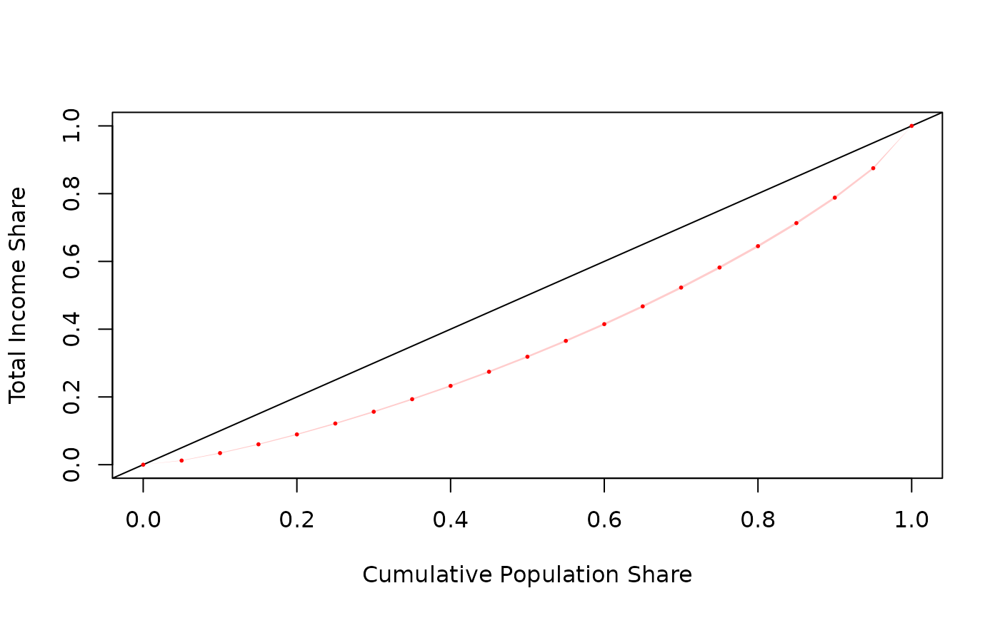
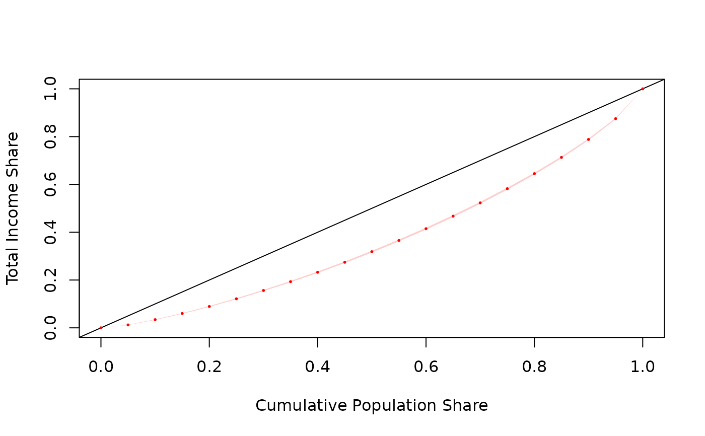

Estimate the Lorenz curve, an inequality graph
svylorenz(formula, design, ...)
# S3 method for survey.design
svylorenz(
formula,
design,
quantiles = seq(0, 1, 0.1),
empirical = FALSE,
plot = TRUE,
add = FALSE,
curve.col = "red",
ci = TRUE,
alpha = 0.05,
na.rm = FALSE,
deff = FALSE,
linearized = FALSE,
influence = FALSE,
...
)
# S3 method for svyrep.design
svylorenz(
formula,
design,
quantiles = seq(0, 1, 0.1),
empirical = FALSE,
plot = TRUE,
add = FALSE,
curve.col = "red",
ci = TRUE,
alpha = 0.05,
na.rm = FALSE,
deff = FALSE,
linearized = FALSE,
return.replicates = FALSE,
...
)
# S3 method for DBIsvydesign
svylorenz(formula, design, ...)a formula specifying the income variable
a design object of class survey.design or class svyrep.design from the survey library.
additional arguments passed to plot methods
a sequence of probabilities that defines the quantiles sum to be calculated
Should an empirical Lorenz curve be estimated as well? Defaults to FALSE.
Should the Lorenz curve be plotted? Defaults to TRUE.
Should a new curve be plotted on the current graph?
a string defining the color of the curve.
Should the confidence interval be plotted? Defaults to TRUE.
a number that especifies de confidence level for the graph.
Should cases with missing values be dropped? Defaults to FALSE.
Return the design effect (see survey::svymean)
Should a matrix of linearized variables be returned
Should a matrix of (weighted) influence functions be returned? (for compatibility with svyby)
Return the replicate estimates?
Object of class "oldsvyquantile", which are vectors with a "quantiles" attribute giving the proportion of income below that quantile,
and a "SE" attribute giving the standard errors of the estimates.
you must run the convey_prep function on your survey design object immediately after creating it with the svydesign or svrepdesign function.
Notice that the 'empirical' curve is observation-based and is the one actually used to calculate the Gini index. On the other hand, the quantile-based curve is used to estimate the shares, SEs and confidence intervals.
This way, as the number of quantiles of the quantile-based function increases, the quantile-based curve approacches the observation-based curve.
Milorad Kovacevic and David Binder (1997). Variance Estimation for Measures of Income Inequality and Polarization - The Estimating Equations Approach. Journal of Official Statistics, Vol.13, No.1, 1997. pp. 41 58. URL https://www.scb.se/contentassets/ca21efb41fee47d293bbee5bf7be7fb3/variance-estimation-for-measures-of-income-inequality-and-polarization---the-estimating-equations-approach.pdf.
Shlomo Yitzhaki and Robert Lerman (1989). Improving the accuracy of estimates of Gini coefficients. Journal of Econometrics, Vol.42(1), pp. 43-47, September.
Matti Langel (2012). Measuring inequality in finite population sampling. PhD thesis. URL http://doc.rero.ch/record/29204.
library(survey)
library(laeken)
data(eusilc) ; names( eusilc ) <- tolower( names( eusilc ) )
# linearized design
des_eusilc <- svydesign( ids = ~rb030 , strata = ~db040 , weights = ~rb050 , data = eusilc )
des_eusilc <- convey_prep( des_eusilc )
svylorenz( ~eqincome , des_eusilc, seq(0,1,.05), alpha = .01 )

#> lorenz SE
#> L(0) 0.000000 0.0000
#> L(0.05) 0.012201 0.0003
#> L(0.1) 0.034270 0.0005
#> L(0.15) 0.060176 0.0006
#> L(0.2) 0.089371 0.0007
#> L(0.25) 0.121588 0.0008
#> L(0.3) 0.156320 0.0009
#> L(0.35) 0.193344 0.0010
#> L(0.4) 0.232591 0.0010
#> L(0.45) 0.274359 0.0011
#> L(0.5) 0.318651 0.0012
#> L(0.55) 0.365497 0.0013
#> L(0.6) 0.414892 0.0014
#> L(0.65) 0.467307 0.0014
#> L(0.7) 0.522865 0.0015
#> L(0.75) 0.582081 0.0016
#> L(0.8) 0.645068 0.0016
#> L(0.85) 0.713133 0.0016
#> L(0.9) 0.788237 0.0016
#> L(0.95) 0.875173 0.0014
#> L(1) 1.000000 0.0000
# replicate-weighted design
des_eusilc_rep <- as.svrepdesign( des_eusilc , type = "bootstrap" )
des_eusilc_rep <- convey_prep( des_eusilc_rep )
svylorenz( ~eqincome , des_eusilc_rep, seq(0,1,.05), alpha = .01 )

#> lorenz SE
#> L(0) 0.000000 0.0000
#> L(0.05) 0.012201 0.0003
#> L(0.1) 0.034270 0.0004
#> L(0.15) 0.060176 0.0005
#> L(0.2) 0.089371 0.0007
#> L(0.25) 0.121588 0.0008
#> L(0.3) 0.156320 0.0009
#> L(0.35) 0.193344 0.0010
#> L(0.4) 0.232591 0.0011
#> L(0.45) 0.274359 0.0012
#> L(0.5) 0.318651 0.0013
#> L(0.55) 0.365497 0.0014
#> L(0.6) 0.414892 0.0014
#> L(0.65) 0.467307 0.0015
#> L(0.7) 0.522865 0.0016
#> L(0.75) 0.582081 0.0016
#> L(0.8) 0.645068 0.0017
#> L(0.85) 0.713133 0.0017
#> L(0.9) 0.788237 0.0016
#> L(0.95) 0.875173 0.0015
#> L(1) 1.000000 0.0000
if (FALSE) {
# linearized design using a variable with missings
svylorenz( ~py010n , des_eusilc, seq(0,1,.05), alpha = .01 )
svylorenz( ~py010n , des_eusilc, seq(0,1,.05), alpha = .01, na.rm = TRUE )
# demonstration of `curve.col=` and `add=` parameters
svylorenz( ~eqincome , des_eusilc, seq(0,1,.05), alpha = .05 , add = TRUE , curve.col = 'green' )
# replicate-weighted design using a variable with missings
svylorenz( ~py010n , des_eusilc_rep, seq(0,1,.05), alpha = .01 )
svylorenz( ~py010n , des_eusilc_rep, seq(0,1,.05), alpha = .01, na.rm = TRUE )
# database-backed design
library(RSQLite)
library(DBI)
dbfile <- tempfile()
conn <- dbConnect( RSQLite::SQLite() , dbfile )
dbWriteTable( conn , 'eusilc' , eusilc )
dbd_eusilc <-
svydesign(
ids = ~rb030 ,
strata = ~db040 ,
weights = ~rb050 ,
data="eusilc",
dbname=dbfile,
dbtype="SQLite"
)
dbd_eusilc <- convey_prep( dbd_eusilc )
svylorenz( ~eqincome , dbd_eusilc, seq(0,1,.05), alpha = .01 )
# highlithing the difference between the quantile-based curve and the empirical version:
svylorenz( ~eqincome , dbd_eusilc, seq(0,1,.5), empirical = TRUE, ci = FALSE, curve.col = "green" )
svylorenz( ~eqincome , dbd_eusilc, seq(0,1,.5), alpha = .01, add = TRUE )
legend( "topleft", c("Quantile-based", "Empirical"), lwd = c(1,1), col = c("red", "green"))
# as the number of quantiles increases, the difference between the curves gets smaller
svylorenz( ~eqincome , dbd_eusilc, seq(0,1,.01), empirical = TRUE, ci = FALSE, curve.col = "green" )
svylorenz( ~eqincome , dbd_eusilc, seq(0,1,.01), alpha = .01, add = TRUE )
legend( "topleft", c("Quantile-based", "Empirical"), lwd = c(1,1), col = c("red", "green"))
dbRemoveTable( conn , 'eusilc' )
dbDisconnect( conn , shutdown = TRUE )
}